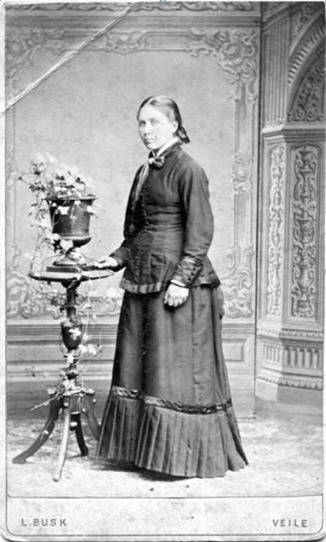
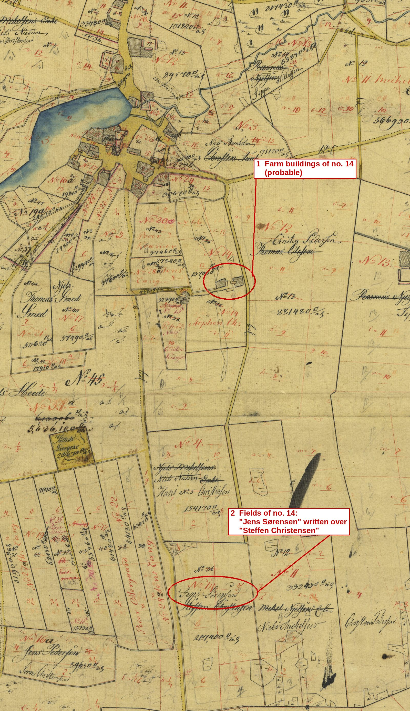
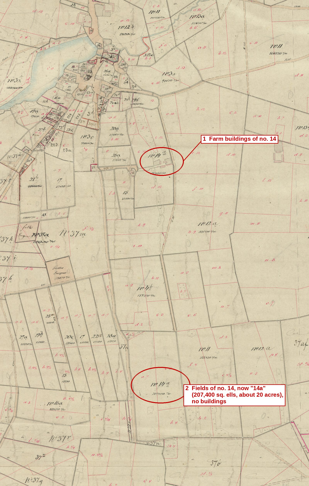

Chapter 3
Marriage and the farm at Terndrup
1853–1865
The times: the corn years and the defeat of 1864. From the 1840s to about 1870 Danish farming lived through its "corn period". Britain's repeal of its Corn Laws in 1846 opened a growing market, and grain prices rose.1 The gains went to those who owned land. An aging farmer could hand his farm to a son or son-in-law under an aftægt, a contract that guaranteed him lifelong support from it.2 Then came catastrophe. In 1864 Prussia and Austria attacked. The Danish position at Dybbøl was stormed on 18 April, and by 14 July all of Jutland was occupied. Under the Treaty of Vienna, Denmark gave up Schleswig, Holstein and Lauenburg, and the monarchy lost 40 per cent of its land and more than a third of its people.3
Life on a Himmerland farm. Rural society was sharply ranked. At the top stood about 70,000 farmers (gårdmænd). Below them were some 160,000 smallholder families (husmænd), then the inderster, lodgers with little or no land of their own, and at the bottom the unmarried servants. Himmerland still had large heaths, where heather fed cattle and sheep and was cut for fuel, roofing and bedding. Food was plain: porridge, rye, fat pork and herring, and potatoes, by now common but still thought of as poor man's food. From about 1850 the iron stove began to replace the open hearth in farm kitchens.4
Niels and Kirsten Get Married
On 22 July 1854 Niels Christian, then 33 and a farm servant (tjenestekarl) at Terndrup, married Kirsten Marie Jensen, daughter of the farmer (gaardmand) Jens Sørensen of Terndrup, in Lyngby church. She was 29, born on 26 April 1825.5 Her father, Jens Sørensen, farmed near Terndrup at Løkken in 1855 and later at Sjøvadsholm.6 In the census of 1 February 1840 he held no. 14 in Terndrup as a fæstehuusmand, a leaseholder of a house with land, living there with his wife Karen Stephansdatter and their daughter Kirsten Maria, then 15 (Census 1840, Lyngby Sogn, Hellum Herred, Aalborg Amt, p. 10, no. 14). Her mother was Karen Steffansdatter. Karen's brother Anders Stephansen (1791–1870) was born at Terndrup, the son of a former itinerant schoolteacher, Stephan Christensen. He became a schoolmaster and philanthropist, and for decades ran Holsteinsminde near Næstved, a home he had founded in 1833 for poor and neglected boys and girls. A memorial stone to him was later raised at the school in his home parish.7


Their first son, Anders Christian, was born on 1 November 1854, less than four months after the wedding, and baptised on 17 December.8
Niels's Life as an Indesidder
The marriage gave the former foster child no land of his own. In 1855 he is recorded at Terndrup as an indesidder on his father-in-law's farm: a lodger who rented rooms there and kept his own small household with Kirsten Marie and their son, but had no share in the farm itself. In the farmhouses of the time it was the hired servants who ate at the farmer's table; an indsidder ran his own household and usually worked as a day labourer.9
The 1860 census of 1 February 1860 finds the family at Sjøvadsholm in Lyngby Sogn, in Jens Sørensen's household on farm no. 57. Sjøvadsholm was not a single farm but a small cluster of homes on the edge of Terndrup village: the census taker wrote the name once, beside house no. 53, and left it blank for the five dwellings that followed. Jens Sørensen's was the only farm (gaard) among them; the others were houses, one of them the home of the local midwife, Cecilie Kirstine Nielsen. Jens Sørensen, 63, is the farmer and head of the household, and Karen Steffansdatter is 66. Kirsten Marie, 35, is entered as their daughter, and Niels Olesen, 37, born in Als Sogn, only as "hendes Mand", her husband, with no trade of his own. Their sons Anders Christian, 6, and Jens, 5, complete the household.10 Jens was born in 1856 and Dorthea Cathrine in 1860.11 His standing did not change. At Ulrica's baptism in 1863 he was still entered as an indsidder, and at her wedding in 1881 as a "former indsidder" of Terndrup. As far as the records show, he never held a farm of his own in Denmark.12




On 24 March 1863 their last child, Ulrica Christine, was born at Terndrup. At her baptism her father was entered under a new surname: Damborg.12
Niels Cut Out of the Inheritance
On 13 July 1865 Jens Sørensen died. Kirsten Marie and her mother took over running the farm. Eleven days later, on 24 July 1865, the Terndrup farmer P. Jacobsen wrote from Uranienborg to Anders Stephansen about the arrangements made in Jens Sørensen's last moments, calling the widow Stephansen's "dear sister". He calls Jens Sørensen "Jens Podemester", evidently the name the village knew him by. At Ulrica's baptism in 1863 the priest had entered him first among her godparents as "Gaardfæster Jens Sørensen Podemester": a tenant farmer (gaardfæster) and a podemester, a gardener who grafted fruit trees, or in Jutland a gardener in general. The estate, about 400 rigsdaler including a bond for 150, was to remain the widow's for her lifetime and then pass in equal shares to the children of "N. Damborg" and Kirsten Marie. With Niels Christian's consent, nothing of the estate, livestock included, could be sold without Jacobsen's approval, and a record (optegnelse) was made of the parts of the buildings, inside and out, that belonged to the estate, so that their upkeep and use stayed under Jacobsen's supervision, separate from what was Niels Christian's own. The arrangements were put in order while Jens Sørensen was still alive, with the schoolteacher Petersen of Terndrup and N. P. Hansen present. Because Jens Sørensen held his land on lease, the estate probably consisted of stock, goods and the bond rather than the land itself, which would explain its modest value. The arrangements kept the estate out of Niels Christian's hands, which suggests his position in the household had already weakened. Jacobsen also answered a worry Stephansen had raised in his own letter of the 15th: "jeg tør med Trøste Dem med [?], Hr. Stephansen, at N. Damborg vil blive from og tillige god mod Deres gamle Søster", "I venture to reassure you, Mr. Stephansen, that N. Damborg will be from and also good to your old sister". The Danish word from can mean pious, but also virtuous, gentle and compliant, as in "from som et lam", meek as a lamb. Beside the limits just placed on his handling of the estate, the second sense seems the likelier: Jacobsen was promising that Niels Christian would be gentle and peaceable towards his widowed mother-in-law. It is the only description of his character by someone who knew him in Denmark.13
Leasehold: fæste and the fæstebrev. Most Danish farms and smallholdings in this period were not owned by the families who worked them. They were held in fæste, a contract by which a landowner, usually the lord of an estate, granted a tenant (fæster) the use of a farm or a house, normally for the tenant's lifetime. The tenant paid an entry fee (indfæstning) when he took over, a yearly rent (landgilde), mostly in kind, and owed labour service (hoveri) on the estate. The terms were set out in a lease deed, the fæstebrev, made in two copies, one for the landowner and one for the tenant, and from 1719 entered in the estate's lease register (fæsteprotokol). A fæstegaardmand held a farm on these terms; a fæstehuusmand, as Jens Sørensen is called in 1840, held a house with land.
A lease was not property, and it did not pass to the tenant's heirs as a matter of course. When a tenant died his widow could stay on the holding, but if she remarried, her new husband needed a fæstebrev of his own. Some leases even required the new tenant to marry the previous tenant's widow or daughter. Taking over a holding therefore meant a new lease from the landowner. That is the likeliest explanation of why Stephan Christensen's name is crossed out on the Terndrup map and replaced by that of his son-in-law, Jens Sørensen. Niels Christian, in turn, never received a lease of his own: he remained an indsidder in his father-in-law's household, and after Jens Sørensen's death in 1865 the widow kept the holding. Leasehold lasted longest among smallholders, and was abolished by law in 1919.
Sources: Lex.dk, "Fæstevæsen"; Danske Slægtsforskere, "Notater: fæsteforhold og fæstebønder" (2023).
Notes
Abbreviation: DFT = Damborg family tree, "20130316 Damborg", Ancestry.com Member Trees, GEDCOM export of 26 May 2026, including its facts, research notes and attached images. Short titles refer to the Works Cited.
- 1Klithede, “Modernisation, internationalisation and urbanisation” (the “corn period” of about 1840–1870; rising grain prices stimulated by Britain's repeal of the Corn Laws in 1846). ↩
- 2Svend Aage Madsen, “At sidde i aftægt,” Herning Historie (aftægt as a contract transferring a farm in return for lifelong support). ↩
- 3“Second Schleswig War,” Wikipedia (storming of Dybbøl, 18 April 1864; all of Jutland occupied by 14 July; Treaty of Vienna; loss of 40 per cent of the monarchy's land and about 38.5 per cent of its population). ↩
- 4Gyldendal og Politikens Danmarkshistorie, “Klasseskel på landet” (about 70,000 gårdmænd, 160,000 husmand families, inderster and servants); Trap Danmark, “De Himmerlandske Heder” (heather as fodder, fuel, roofing and bedding); Nationalmuseet, “Mad i 1800-tallet” (rye; fat pork and herring; the potato as “fattigmandskost”; the stove after 1850). ↩
- 5Lyngby Sogn church book, marriages 1854 (Rigsarkivet, epid 17125016); DFT, family of Niels Christian Olesen and Kirsten Marie Jensen: marriage 22 July 1854; Kirsten Marie Jensen: birth 26 April 1825, baptism 27 April 1825, Lyngby Sogn. Entry no. 4: "Niels Christian Olesen, 33 Aar, Tjenestekarl i Terndrup"; "Kirsten Marie Jensdatter, 29 Aar, Gmd. Jens Sørensens Datter i Terndrup"; married in the church (image supplied by the family). ↩
- 6DFT, Jens Sørensen: residence and links “1855 Census Farm Løkken” and “1860 Census Sjøvadsholm”; family of Jens Sørensen and Karen Steffansdatter. ↩
- 7Dansk Biografisk Leksikon, “Anders Stephansen” (born 20 May 1791 at Terndrup, Lyngby Sogn; father Stephan Christensen, former itinerant schoolteacher; the institute opened 4 May 1833 at Fuirendal and moved on 4 May 1840 to Hjortholm, Førslev Sogn, renamed Holsteinsminde; died 22 March 1870); Ludvig Beck, Anders og Dorothea Stephansen og deres Børn (1941; gives 20 August 1791); lex.dk, “Holsteinsminde” (a home for poor and neglected children of both sexes); Trap Danmark, 5th ed., “Lyngby sogn” (memorial stone at the school); DFT, Anders Stephansen (birth 20 May 1790) and Kirsten Marie Jensen, note. ↩
- 8Lyngby Sogn church book, births 1854, boys no. 7: born "Den 1ste November", baptised 17 December 1854 (Rigsarkivet, epid 17125016; also FamilySearch DGS film 007471320, image 316). The DFT gives his birth as 7 November 1854, which the church book contradicts; his own letter of 29 January 1918 also gives 1 November 1854 (Viborg Landsarkiv journal 1918 no. 137). ↩
- 9DFT, Niels Christian Olesen: occupation 1855, Terndrup (“Indesidder” at his father-in-law's farm; the tree's note that he ate with the family is not supported by the sources below). On the term: Lex.dk, “inderste” (a lodger renting a house or rooms in the countryside, keeping his own household; the lowest rank of rural society); “Indsidder,” Wikipedia (Danish) (a lodger with his own household, distinct from hired servants); DS-Wiki, “Inderste.” On servants eating at the farmer's table: Gyldendal og Politikens Danmarkshistorie, “Klasseskel på landet.” ↩
- 101860 census, Lyngby Sogn, Hellum Herred, Aalborg Amt, 1 February 1860, Sjøvadsholm, no. 57 (en gaard), family no. 100, persons 508–513 (Danish Family Search, cid 14200250; the place name "Sjøvadsholm" is written in the original only beside no. 53, at the head of a run of dwellings nos. 53–58, of which no. 57 is the only farm; the name is not found in Trap Danmark or on arkiv.dk; transcription from Dansk Demografisk Database, DDA 25528, KIP D6515, source ref. 192; image supplied by the family, 2 October 2026). The tree's image "1860 census NCO" and its occupation "Farmer (own)" belong to a different Niels Christian Olesen in Rybjerg Sogn, Viborg Amt (see Appendix C). ↩
- 11DFT, Jens Nielsen: birth 1856, Terndrup; Dorthea Cathrine Nielsen: birth 1860, Terndrup (Kontraministerialbog ref. C118/G/016). ↩
- 12DFT, Ulrica Christine Nielsen: birth 24 March 1863, Terndrup (Lyngby church book, Rigsarkivet epid 17125016); Niels Christian Olesen, event “Name change” 1862 and note (the name Damborg first used at Ulrica's baptism). Lyngby Sogn church book, births 1863, girls no. 3 ("Indsidder Niels Christian Olesen Damborg og Hustru Kirsten Marie Jensen, Terndrup"; godparents "Gaardfæster Jens Sørensen Podemester, Huusmand og Væver [?] Jens Olesen, Huusmand Lars Nielsen Ollgaard, Barnets Moder Kirsten Marie Jensen og Niels Mikkelsens Hustru Johanne Laursen [?], alle af Terndrup"; remarks "Moderen er 39 Aar [sic; she was 37], introduceret den 14 Mai"; FamilySearch DGS film 007471320, item 4, image 43); Tystrup Sogn church book, marriages 1881, no. 6 ("forhenværende Indsidder Niels Christian Olsen Damborg i Terndrup"); images supplied by the family. ↩a ↩b
- 13DFT, Jens Sørensen: death 13 July 1865; Kirsten Marie Jensen, note (after her father's death she ran the farm with her mother); images “1865 Jens Sørensen Death Probate” and “1865 Stephanson Uranienborg” I–II; research timeline note on 1863–66. P. Jacobsen to Anders Stephansen, Uranienborg, 24 July 1865, copy (Afskrift), pp. 1–2 ("Jens Podemester"; "N. Damborg vil blive from og tillige god mod Deres gamle Søster"), images supplied by the family. Lyngby Sogn, church book 1851–1864, births 1863, girls no. 3 (godparents headed by "Gaardfæster Jens Sørensen Podemester"), FamilySearch DGS film 007471320, item 4, image 43. Ordbog over det danske Sprog, vol. 16 (1936), "Pode-mester" ("gartner, der udfører podning"; in Jutland also a gardener in general); Den Danske Ordbog, "from" (1. pious; 2. "dydig, blid og føjelig", as in "from som et lam"). On Anders Stephansen's residence at Holsteinsminde, see Dansk Biografisk Leksikon, “Anders Stephansen.” ↩